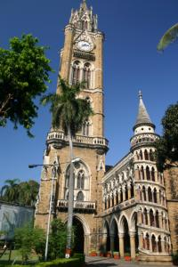

Le 21 décembre 2004,
Bombay est une ville tellement differente de toutes celles que nous avons pu voir jusqu’ici en Inde ! Nous n’avons pas l’impression d’etre dans le meme pays...
D’abord, c’est une ville immense (plus grande que Paris) dans laquelle se melange sans complexe modernite et pauvrete. Les rues sont relativement propres, bordees de larges trottoirs sur lesquel de pauvres gens passent la nuit ou somnolent dans la journee. Les rickshaws sont interdits dans la ville, seuls les veritables taxis (avec un vrai compteur et tout...) sont autorises. D’ailleurs, ils puluent dnas toute la ville ! Audune vache a l’horizon (donc aucune bouse !), seulement quelques chiens errent dans la ville comme des ames en peine. La moitie des femmes portent le sari ou un habit traditionnel et l’autre moitie est habillee a l’europeenne. Quelques femmes portent la burka et sont entierement voilees des pieds a la tete avec seulement des trous pour les yeux... Et leur mari qui tes tient fierement par la taille !! Ca m’ecoeure... Nous avons meme croise des travellos habilles en sari... On aura tout vu dans ce pays !
 Les batiments sont en grande partie de style anglais, nous sentons bien l’influence bitannique ici. Des superbes hotels en front de mer sont juxtaposes a cote d’immeubles en etat avance de delabrement. En tous cas, ca nous fait un bien fou de voir la mer et de sentir cette odeur rafraichissante de l’ocean. Il faut dire qu’il fait extremement lourd et humide dans cette ville, beaucoup plus que dans le Rajasthan. Par contre, les detritus qui jonchent la plage de tous cotes, ne nous donnent pas vraiment envie de nous baigner. Ce n’est d’ailleurs pas du tout recommande a cause des egouts se deversant directement dans la mer sans retraitement au prealable...
{kind=link}
Bombay est une grande ville d’affaires avec ce que ca apporte comme avantages et comme inconvenients. Les gens sont beaucoup trop occupes a leurs soucis pour s’occuper de nous. Ils marchent, tete baissee, snas faire attention a nous et sans nous fixer du regard comme dans d’autres villes. Ca fait du bien de se sentir comme tout le monde, de ne pas avoir la sensation d’etre un extra-terrestre aux yeux des autochtones ! Ceci dit, les gens de Bombay sont egalement moins souriants et moins curieux qu’ailleurs. Ils ont un air preoccupe que nous pouvons retrouver chez beaucoup d’europeens... Bien sur, des que nous approchons des lieux touristiques tels que l’India Gate (une sorte d’arc de triomphe) ou la plage principale, les bonnes vieillles habitudes reviennemt et nous nous retrouvons vite harceles de toute part par les vendeurs ambulants.
Nous avons egalement la possibilite de gouter de succulents plats dans les restaurants de Bombay. Ces derniers ressemblent beaucoup plus a nos restaurants europeens que tous ceux que nous avons pu cotoyer en Inde jusqu’ici :
 Les serveurs sont aux petits soins pour nous (il y a a peu pres un serveur par table dnas les bons restaurants), meme un peu trop certaines fois. Ils viennent nous demander 10 fois su tu as besoin de quelque chose d’autre...
Les serveurs sont aux petits soins pour nous (il y a a peu pres un serveur par table dnas les bons restaurants), meme un peu trop certaines fois. Ils viennent nous demander 10 fois su tu as besoin de quelque chose d’autre...
 Les toilettes sont propres et contiennent du savon et du papier toilette (c’est bien la premiere fois que nous voyons ca en Inde !) et meme un seche-main automatique, le comble du luxe !
Les toilettes sont propres et contiennent du savon et du papier toilette (c’est bien la premiere fois que nous voyons ca en Inde !) et meme un seche-main automatique, le comble du luxe !
 La carte est variee et ne contient pas que des plats vegetariens, au contraire, contre toute attente, nous avons meme pu manger un bon steack frites !! Oh miracle... Moi qui attendais ca depuis si longtemps ! En plus, le boeuf etait tendre et delicieux, comme je l’aime... Nous avons egalement pu profiter du poisson peche a proximite et nous regaler. Etant donne la lenteur des transports, il etait impensable de manger du poisson au Rajasthan qui se situe a des centaines de kilometres de la mer !
La carte est variee et ne contient pas que des plats vegetariens, au contraire, contre toute attente, nous avons meme pu manger un bon steack frites !! Oh miracle... Moi qui attendais ca depuis si longtemps ! En plus, le boeuf etait tendre et delicieux, comme je l’aime... Nous avons egalement pu profiter du poisson peche a proximite et nous regaler. Etant donne la lenteur des transports, il etait impensable de manger du poisson au Rajasthan qui se situe a des centaines de kilometres de la mer !
Bref, nous avons repris des forces avec la dose de proteines et de vitamines que nous avons ingurgite a Bombay !
Nous ne pouvions pas quitter l’Inde sans nous faire un bon film indien, bien kitch comme on les aime. Nous ne sommes pas a Bollywood pour rien ! Mais ce n’est pas facile de choisir un film avec comme seul critere, son affiche publicitaire ! En fait, ce n’est deja pas evident de trouver un cinema qui passe un film indien. Si on souhaite voir "Les Indestructibles" ou "Bridget Jones 2" ou "Ocean’s Twelve", pas de probleme, mais pour trouver un bon film en hindi... Etant donne qu’un cinema ne passe seulement qu’un ou deux films et que le nombre de cinemas n’est pas si eleve que ca a Bombay, nous avons du faire des kilometres a pieds pour trouver ce que nous cherchions ! Enfin, nous tombons sur un film en hindi qui parle d’amour, ca devrait me plaire ! Les places de cinema sont numerotees contrairement a nos cinemas francais et les tarifs sont differents selon la place ou tu te situe par rapport a l’ecran. Ce n’est pas mal comme systeme ! Une serie de bandes-annonces et tout le monde se leve d’un coup lorsque le drapeau indien apparait a l’ecran et que l’hymne national commence a se faire entendre. Surpris et amuses, Michael et moi nous levons egalement afin de participer a leur patriotisme. Quelques instants apres, tout le monde se rassoit et le film peut commencer. Meme si nous ne comprenons absolument pas ce qu’ils se racontent etant donne que les personnages parlent en hindi, il n’est pas tres difficile de comprendre la trame de l’histoire. Un homme et une femme tombent amoureux l’un de l’autre, mais elle est deja promise a un autre... Contrainte par ses parents, elle concede au mariage mais ne pense qu’a son amant ! Bref, un film melodramatique a souhait avec moulte danses et chansons et des tourbillons de couleurs a gogo. J’adore !! Je n’ai pas vu passer ces 3h30 de film contrairement a Michael qui consulte sa montre a plusieurs reprises. ceci dit, il a quand meme apprecie la beaute a couper le souffle des actrices, il n’a pas tout perdu ! Nous dinons le soir dans un tres bon restaurant de poissons, mais le reaps manque de saveur a cause d’une dispute entre Michael et moi due a un malentendu... Rien de grave cependant !
Eve-Laure